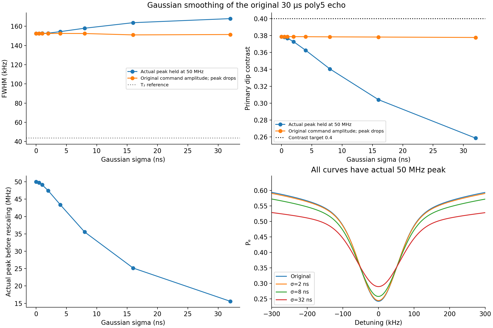
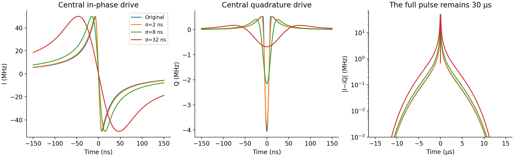
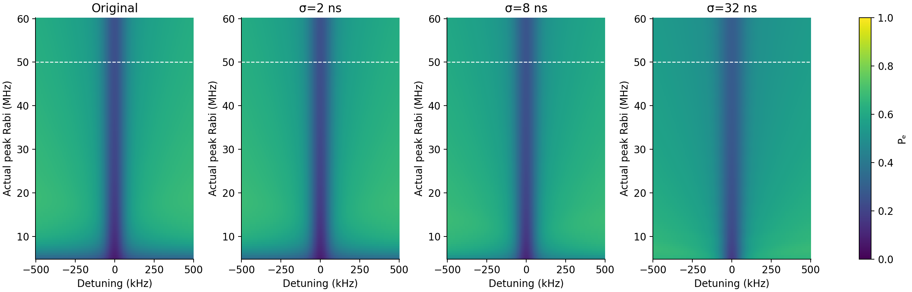

At an actual 50 MHz peak, every tested filter broadened the line and reduced contrast. The tested Gaussian σ range was 0.5–32 ns.
The original pulse is unchanged except for identical Gaussian convolution of its completed I and Q waveforms. Duration remains 30 µs. The existing 16 ns sine reversal is smoothed together with the amplitude and derivative correction. A Gaussian sigma describes the filter width, not a new pulse duration.
The main comparison restores the actual completed peak to 50 MHz. A separate control leaves the original command amplitude unchanged: filtering then lowers the physical peak. This separates pulse-shape effects from simply using a weaker drive.
| Filter σ (ns) | Peak without rescaling (MHz) | FWHM at restored 50 MHz (kHz) | Contrast at restored 50 MHz | FWHM without rescaling (kHz) | Contrast without rescaling |
|---|---|---|---|---|---|
| None | 50 | 152.462 | 0.378721 | — | — |
| 0.5 | 49.749 | 152.526 | 0.378174 | 152.465 | 0.378719 |
| 1 | 49.145 | 152.647 | 0.376828 | 152.473 | 0.378714 |
| 2 | 47.464 | 152.845 | 0.372809 | 152.504 | 0.378691 |
| 4 | 43.388 | 154.461 | 0.362594 | 152.585 | 0.378605 |
| 8 | 35.557 | 157.994 | 0.340504 | 152.478 | 0.378434 |
| 16 | 25.158 | 163.772 | 0.304155 | 151.037 | 0.378211 |
| 32 | 15.577 | 168.003 | 0.258707 | 151.445 | 0.377693 |

The filter attenuates the sharp central part more than the slowly varying tails. For σ=4 ns, the peak retains 86.78% of its original height. Restoring 50 MHz multiplies the whole filtered waveform by 1.1524, also increasing the tail amplitude. The comparison without rescaling shows a nearly unchanged spectroscopy line even though the central peak drops considerably. This points to the core/tail balance as an important mechanism; it does not isolate every dynamical contribution. Smoothing a nanosecond feature does not extend the 30 µs pulse or remove dephasing. A narrower Fourier spectrum of the drive alone would not establish a narrower dip in this driven echo simulation.


| Filter σ (ns) | Linewidth regressions | Contrast regressions | Worst broadening (kHz) | Smallest contrast change |
|---|---|---|---|---|
| 2 | 100/111 | 91/111 | 1.513 | -0.006518 |
| 8 | 102/111 | 96/111 | 6.961 | -0.040149 |
| 32 | 109/111 | 103/111 | 21.399 | -0.134762 |
Direct simulations at 111 amplitudes, 5–60 MHz in 0.5 MHz steps; zero allowed regression tolerance. Each filtered waveform is scaled to the actual peak on the vertical axis. Complete band comparisons · Map population arrays
Contrast uses the same linear-wing background as the preceding reports. Filtering does not remove T₁/T₂ loss. This is a three-level Lindblad simulation with T₁=51.24 µs, T₂=7.31 µs, and anharmonicity −216 MHz. Filters are illustrative, not measured transfer functions; no hardware run was performed.
The sampling and integration timestep are both halved for representative filter widths. The tiny postfilter values at the original endpoints are recorded; pulse support is retained at 30 µs. The full 50 MHz scan uses 801 detunings from −0.5 to +0.5 MHz.
Metrics, conventions, and convergence · 50 MHz spectra · Historical cache provenance · Figure PDF
{
"duration_us": 30.0,
"cutoff": 0.001,
"power": 5.0,
"transition_us": 0.016,
"drag_beta": -0.5,
"anharmonicity_mhz": -216.0
}